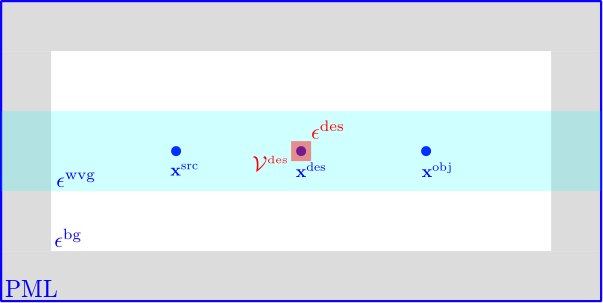

Implementation notes I: The math and physics behind meep_adjoint¶
These notes are intended as something of a
companion to the rest of the meep_adjoint documentation,
and particularly as a complement and sequel to the
Overview; whereas the goal of
that content is to document the user interface and
explain how to use the solver for practical problems,
our focus here will be what’s going on beneath the hood—how
the solver actually works.
Actually, as will be clear to anyone who has ever reviewed the fundamentals of adjoint sensitivity analysis, the conceptual basis of the method and the derivation of its key formulas are almost trivially straightforward, with the only potential source of difficulty being how to massage the mechanics of the procedure into a form that comports with meep conventions.
Toy problem¶
Ultimately we want to use adjoint methods to differentiate complicated objective functions—involving quantities such as Poynting fluxes and mode-expansion coefficients—with respect to various different types of parameters describing material geometries. However, before tackling the problem in that full generality, it’s useful to build up to it by starting with a simple toy problem and adding complications one at a time. Thus we consider a simple waveguide geometry, excited by a point source at \(\mathbf{x}^\text{src}\) and define our objective function to be simply the frequency-domain electric-field amplitude at a point \(\mathbf{x}^\text{obj}\); we will compute the derivative of this objective function with respect to the permittivity \(\epsilon^\text{des}\) in a small “design region” \(\mathcal{V}^\text{des}\) centered at a third point \(\mathbf{x}^\text{des}\).
Permittivity derivative by finite-differencing¶
An obvious brute-force way to get at this is simply to do two meep calculations, with \(\epsilon^\text{des}\) augmented by a small finite amount \(\Delta\epsilon\) on the second run, then compute the difference between the frequency-domain electric fields at \(\mathbf{x}^\text{obj}\) and divide by \(\Delta\epsilon\) to estimate the derivative. The following two figures illustrate results obtained by executing such a strategy; the upper plot shows the spatial distribution of E-field strength for the unperturbed geometry, while the lower plot shows the difference between the field strengths in the perturbed and unperturbed cases:
(Here and below we use the tilde sign (\(\sim\)) to indicate frequency-domain fields and sources.)
Permittivity derivative from effective sources¶
One way to think about the effect of a localized permittivity bump goes like this: Increasing the permittivity in some localized region of a material body corresponds to increasing the polarizability in that region—that is, the ease with which positive and negative charges in the material, ordinarily bound so tightly together that they neutralize each other as sources, can be induced by applied electric fields to separate (“polarize”), whereupon they cease to cancel each other and act as effective sources contributing to electromagnetic fields. Of course, if there were no electric field in the material, then we could increase its polarizability as much as we pleased without producing any sources—zero times a bigger coefficient being still zero—but here there is a nonzero electric field throughout our geometry, due to the point source in the unperturbed problem, which means that the effect of bumping the permittivity of the design region may be approximated by adding new sources in that region, with strength proportional to \(\Delta\epsilon\) and to the unperturbed electric field. More specifically, in a frequency-domain problem involving time-harmonic fields and sources with angular frequency \(\omega\) (time dependence \(\propto e^{-i\omega t}\)), the following perturbations are equivalent:
Superposing this effective source with the original point source at \(\mathbf{x}^\text{src}\) yields a source configuration that, acting on the unperturbed geometry, produces the same fields as the point source alone acting on the perturbed geometry.
Alternatively, by exploiting the linearity of Maxwell’s equations (and assuming we have linear media!) we could just as easily remove the original point source and compute the fields of \(\widetilde{\Delta \mathbf{J}}\) alone, which, upon dividing through by \(\Delta\epsilon\), give just the derivatives of field components with respect to \(\epsilon\). In other words,
Analogous reasoning yields a prescription for magnetic-field derivatives:
Digression: Configuring time-domain sources for desired frequency-domain fields in meep¶
In frequency-domain electromagnetism we usually consider a time-harmonic source distribution of the form
and we ask for the time-harmonic electric field distribution radiated by this distribution:
where \(\sim\) indicates frequency-domain amplitudes. A typical frequency-domain solver might input \(\widetilde{\mathbf J}(\mathbf x)\) and output \(\widetilde{\mathbf E}(\mathbf x)\):
On the other hand, when using meep to compute the fields produced by a given spatial source distribution, we typically construct a time-domain source of the form \(\mathbf{J}^\text{meep}(t,\mathbf{x})=G(t)\widetilde{\mathbf{J}}(\mathbf x)\) where \(G(t)\) is a Gaussian temporal envelope. More specifically, for a |GaussianSource| with center frequency \(\omega_0=2\pi f_0\), frequency width \(\Delta \omega =2\pi \Delta f\), and peak time \(t_0\), we have
The Fourier transform of this is
So the meep version of the above input/output diagram looks like
The upshot is that the frequency-domain fields obtained from a meep timestepping run with a Gaussian source come out multiplied by a factor of \(\widetilde{G}(\omega)\) that should be divided out to yield the desired frequency-domain quantities.
Invoking reciprocity¶
It is convenient to describe the process described above in the language of frequency-domain Green’s functions, which express the fields radiated by monochromatic source distributions as spatial convolutions:
with \(\boldsymbol{\mathcal{G}}^\text{EE}\) the electric-electric dyadic Green’s function of the material geometry (giving the electric field produced by a unit-strength electric current). In this language, the effective-source representation of the permittivity derivative reads
It is convenient to think of the RHS here as a double convolution of two vector-valued functions with the \(\boldsymbol{\mathcal{G}}^\text{EE}\) kernel:
or
where \(\star\) denotes convolution, \(\boldsymbol{\delta}_i^\text{obj}\) is short for \(\delta_{ij} \delta(\mathbf{x}-\mathbf{x}^\text{obj}),\) and the bra-ket notation describes a machine that inputs two vector-valued functions \(\mathbf{f},\mathbf{g}\) and a kernel \(\mathcal{K}\) and outputs a scalar quantity:
(Note that this is not a Hermitian inner product, i.e. the first factor is not conjugated.)
For the magnetic-field derivative we have similarly
where \(\boldsymbol{\mathcal{G}}^\text{ME}\) is the magnetic-electric Green’s function, giving the magnetic field produced by an electric current.
Computationally, inner products like \(\VMV{\mathbf f}{\boldsymbol{\mathcal{G}}^\text{EE}}{\mathbf g}\) for arbitrary functions \(\mathbf{f}(\mathbf x), \mathbf{g}(\mathbf x)\) may be evaluated in meep as follows:
Create an electric current source with spatially-varying amplitude \(\mathbf{g}(\mathbf x)\) and Gaussian temporal envelope \(G(t)\).
Timestep and DFT to compute the frequency-domain electric field \(\widetilde{\mathbf E}(\omega; \mathbf{x})\) produced by this source.
Compute the inner product \([\widetilde{G}(\omega)]^{-1} \int \mathbf{f}\cdot \widetilde{\mathbf E}\,dV.\) (The normalization prefactor was discussed above.)
The virtue of writing things this way is that it allows the physical property of reciprocity to be expressed as the mathematical property that the aforementioned inner-product machine is insensitive to the order of its arguments, i.e. we can flip the \(\mathbf f\) and \(\mathbf g\) inputs and still get the same scalar output:
Applying reciprocity to the above expressions for field derivatives yields
where in going to the last line we invoked the identity \(\boldsymbol{\mathcal{G}}^\text{EM}=-\boldsymbol{\mathcal{G}}^\text{ME}.\)
Note that equations (3a) and (3b), notwithstanding their nearly identical appearance, describe two rather different :codename:meep calculations: In the former case wf place an electric source at \(\mathbf x^\text{obj}\) and timestep to compute the resulting magnetic field, while in the latter case we place a magnetic source and timestep to compute the resulting electric field. (In both cases, upon computing the field in question we proceed to compute its overlap with the unperturbed \(\mathbf E\) field in the design region.)
Differentiating more complicated functions of field components¶
Thus far we have only considered derivatives of individual field components, and then only at a single point \(\mathbf{x}^\text{obj}\); more generally, we will want to differentiate functions of multiple field components over a subregion of the grid, which we will call the objective region \(\mathcal{V}^\text{obj}\).
E-field energy in region¶
As one example, the electric field energy in the objective region is defined by an integral over that region, which meep approximates by a weighted sum over grid points:
Here the sum is over all field components \(i=\{x,y,z\}\) and all grid points \(\mathbf{n}\) lying in \(\mathcal{V}^\text{obj}\), and \(w_{\mathbf{n}}\) is a cubature weight associated with point \(\mathbf{n}\).
Differentiating, we have
Poynting flux¶
A case that arises frequently is that in which the objective region is a cross-sectional surface \(\mathcal S^\text{obj}\) cutting normally through a waveguide or similar structure and the objective function is the normal Poynting flux through \(\mathcal S\). For example, the \(x\)-directed Poynting flux is given by
where \(\cdots\) refers to three other terms of the form \(\pm E^*_i H_j\). Differentiating and rearranging slightly, we have